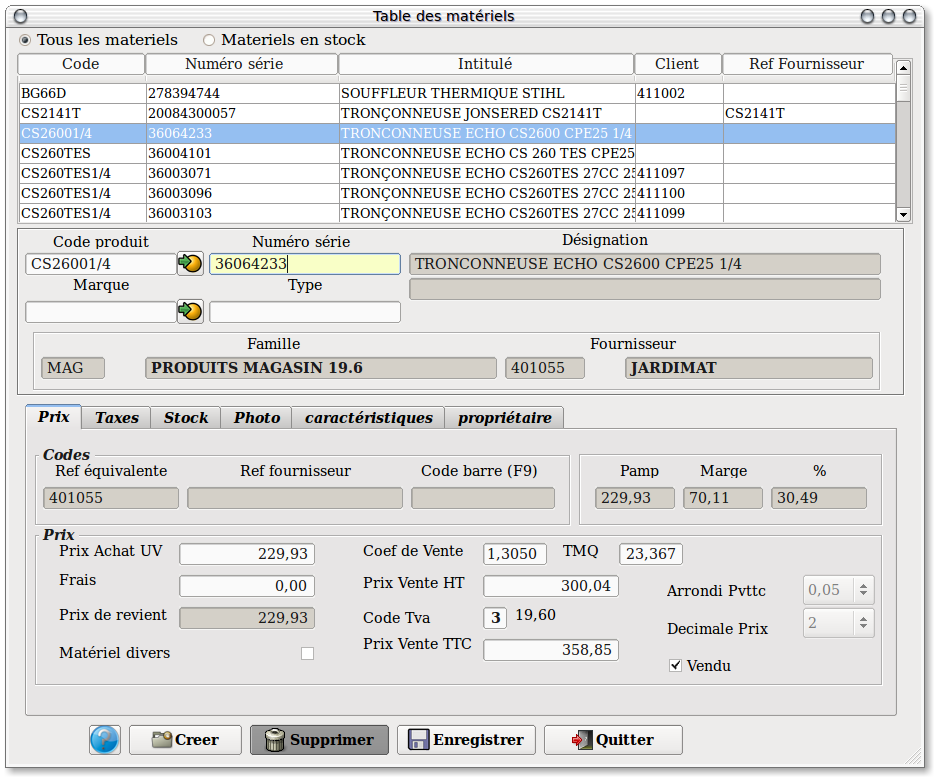
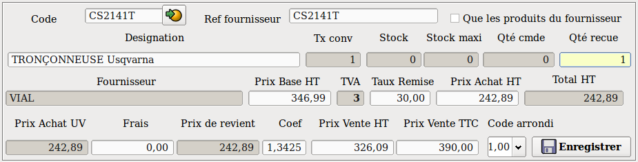
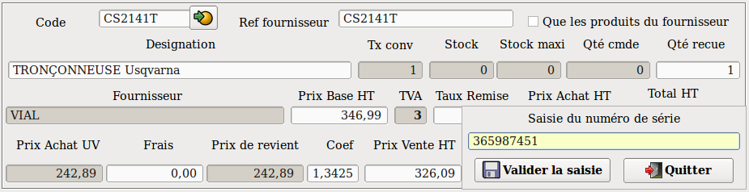
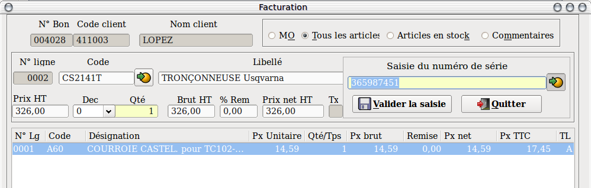
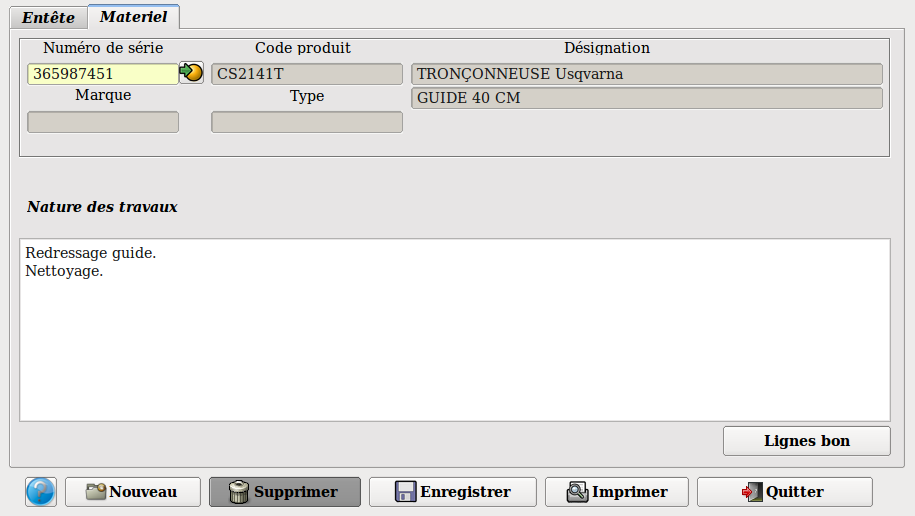
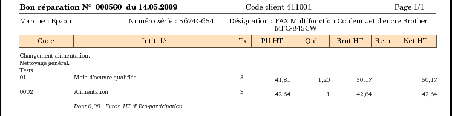

~ Comptabilité & facturation Laurux ~

~ Comptabilité & facturation Laurux ~ |
|
|
|
La gestion du matériel permet de créer, d'effectuer les entrées et les sorties, de saisir les entretiens effectués pour chaque matériel, et enfin d'avoir un historique de l'ensemble des entretiens.
Préalable:
1- Dans les "Préférences", il faudra cocher le bouton "Gestion des matériels" dans l'onglet "Gestion"
2- Pour créer un matériel, il faudra obligatoirement se referer à une fiche produit.
3- Les produits utilisés pour la création du matériel devront être définis comme étant du matériel par le bouton idoine dans les fiches produits. Cocher ce bouton activera simultanément le bouton "Stocké".
Exemple:
Je vends des Fax Epson MFC-845CW et je souhaite assurer l'entretien de ce materiel. Je vais donc créer un produit Epson mfc-845cw, dans la table des articles, en cochant bien le bouton "Materiel".
Si je fais une réception de ces deux produits j'aurai donc une création
automatique de deux matériels qui découlera de la saisie des numéros de
série.
Donc, j'aurai deux Epson mfc-845cw en stock et deux fiches matériels sans propriétaire.
Si un client vient m'acheter ce Fax, je saisirai une facture "Hors
entretien" pour la vente de ce produit. A la saisie de ce document le
programme me demandera de saisir un numéro de série parmis tous les
matériels non vendus.
Le stock de ce produit sera donc diminué de 1 et dans la fiche du matériel, les zones "Propriétaire" seront completées et le bouton "Vendu" sera activé.
Par la suite, toutes prestations sur ce matériel donnera lieu à la saisie d'une facture "Entretien".
La création du matériel se fera de deux façons.
1- Par la
table des matériels.
Cette procédure sera a utiliser pour
créer les
anciens matériels en stock ou ceux dont vous avez l'entretien en charge mais qui n'ont pas été vendus par vous même.

Pour créer un produit, on clique sur le bouton "Creer" puis on active le bouton de recherche des produits. Seuls s'afficheront les produits ayant le bouton "Matériel" coché. L' appel d'un produit reprendra les carastéristiques du produit et il suffira de compléter le numéro de série, la marque et de modifier éventuellement les zones prix. Lors de la création d'un matériel on ne coche pas le bouton "Vendu". Renseigner ensuite le propriétaire dans l'onglet idoine.
2- Par les réceptions de marchandises.

Lors des réceptions manuelles ou automatiques, si un produit réceptionné est un matériel alors le programme ouvrira une fenêtre de saisie des numéros de série à l'enregistrement des lignes.

Dans notre exemple, on voit qu'on a reçu 2 codes produit 0032. La fenêtre proposera donc la saisie de deux numéros de série. A la validation du numéro de série, le matériel est automatiquement créé avec les caractéristiques du produit.
Pour les réceptions automatiques, il faudra rappeler les lignes de matériel afin de saisir les numéros de série. Si ces numéros n'ont pas été saisis, alors la validation de la réception sera refusée et un message s'affichera.
Vente d'un matériel.En facturation comme en réception de marchandises, on utilisera le code produit. On vend donc un produit mais pas un matériel. Cette vente se fait par le programme de la facturation classique mais pas par la facturation entretien.
On ne peut vendre qu'un seul matériel. Si vous avez plusieurs matériels alors il faudra appeler plusieurs fois le produit concerné.

A la
validation de la ligne, le programme va ouvrir la fenêtre de saisie des
numéros de série.
On aura
une ligne supplémentaire contenant le numéro de série du matériel
vendu. (Voir exemple ci-dessus).
Le matériel étant vendu, la fiche sera mise à jour, zones prix de vente et bouton "Vendu", onglet concernant le propriétaire. Le produit étant vendu, toutes les zones de la fiche deviendront inaccessibles (grisées).
Facture entretien.

Pour les entretiens de matériel on passera par le programme de "Facture entretien". La saisie de l'entête est la même que pour une facture normale. Puis on ira dans l'onglet "Matériel" pour saisir le materiel concerné. Une pression sur le bouton de recherche des numéros de saisie ouvrira une fenêtre qui proposera l'ensemble du matériel du client.
On ne pourra aller en "Lignes bon" que si le matériel a été saisi. La saisie des lignes se déroule comme pour une facture classique, cependant on ne pourra pas saisir les produits dont la case "Matériel" est cochée.

A l'impression le bon aura cet aspect là. En premier on aura les caractéristiques du matériel puis les lignes de texte concernant la nature du travail effectué, puis les lignes de détails (MO et produits).
----------------------------------------------------------------------------------------------------------------------